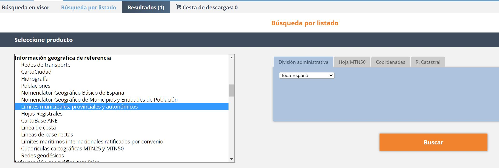
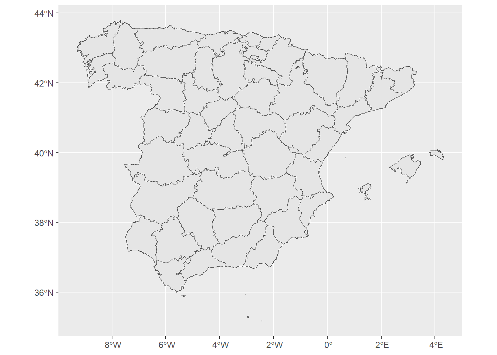
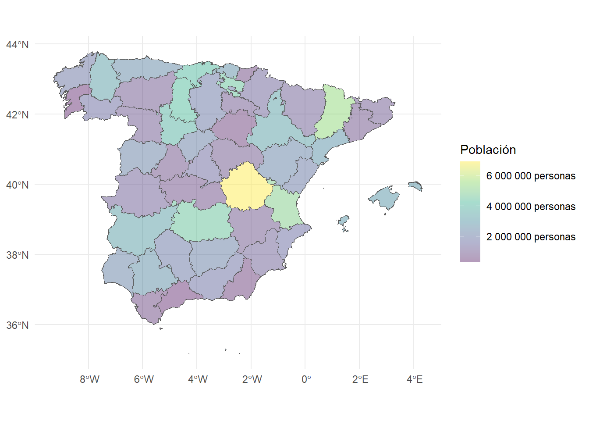
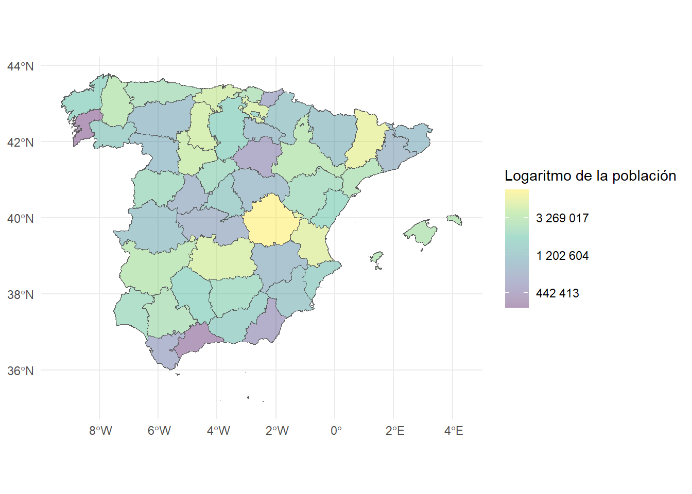
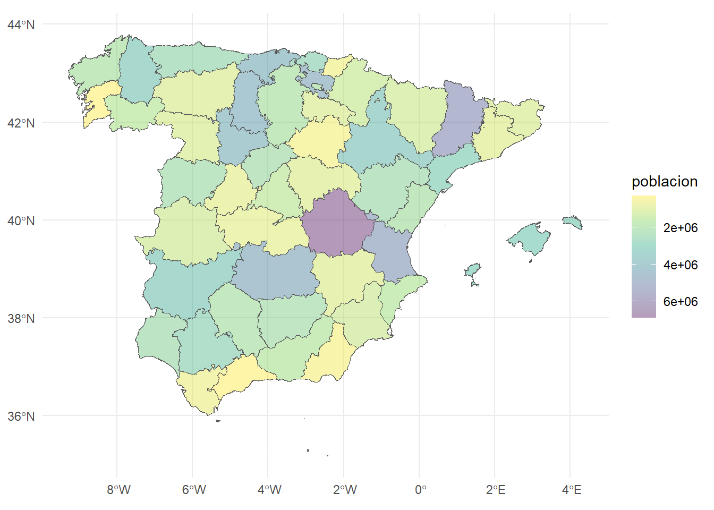
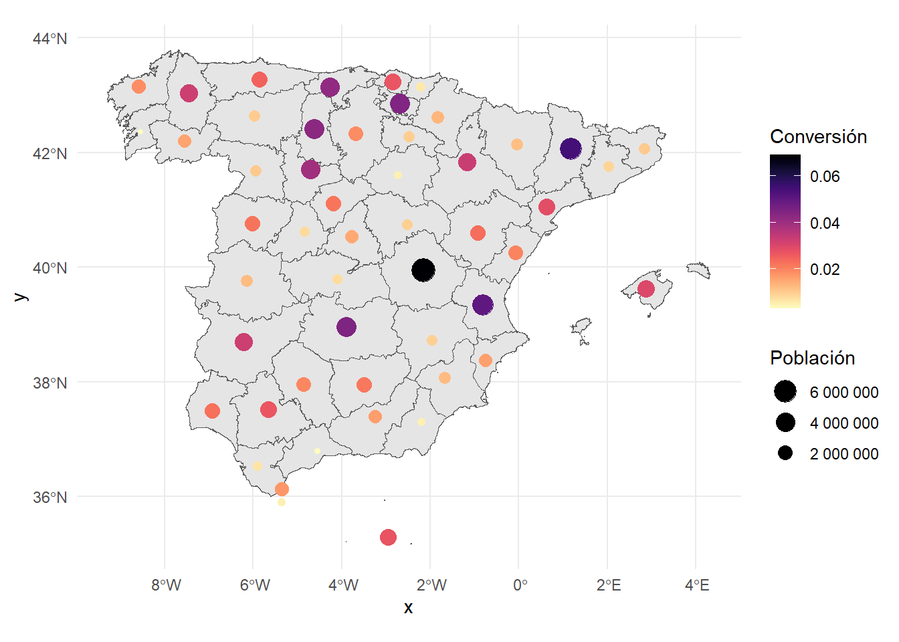
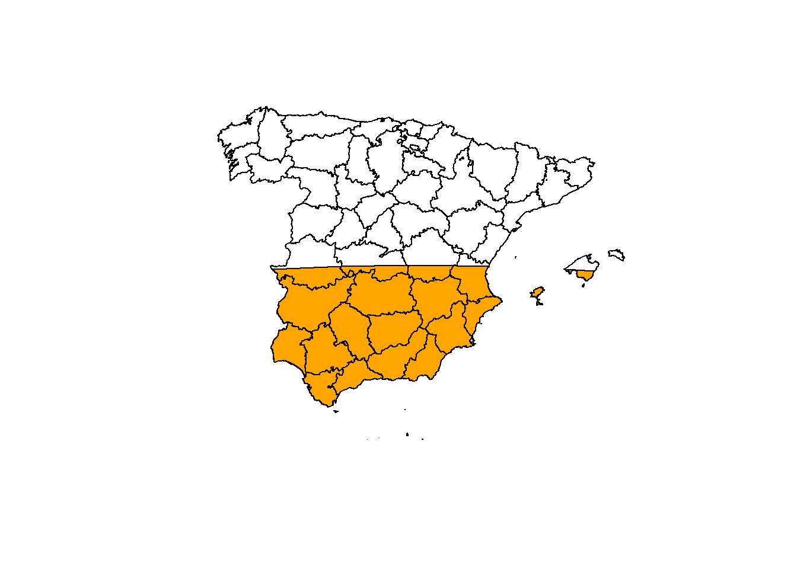

Geovisualización
Una visualización de datos correcta puede expresar de forma resumida y clara gran cantidad de información, ayudando a interpretar y asimilar la información más facilmente.
Librerías específicas.
Polígonos
Datos
El Gobierno de España pone a disposición pública bases de datos de las divisiones administrativas de España que podemos descargar en formato SHP.
Una vez que tenemos claro qué tipo de información queremos, realizamos la búsqueda por listado y la añadimos en la cesta de descargas y a continuación iniciamos la descarga.

Código
r_provinciales <- st_read("../data/lineas_limite/SHP_ETRS89/recintos_provinciales_inspire_peninbal_etrs89/recintos_provinciales_inspire_peninbal_etrs89.shp")
## Reading layer `recintos_provinciales_inspire_peninbal_etrs89' from data source
## `C:\Users\MarioC\Documents\GitHub\dataviz\data\lineas_limite\SHP_ETRS89\recintos_provinciales_inspire_peninbal_etrs89\recintos_provinciales_inspire_peninbal_etrs89.shp'
## using driver `ESRI Shapefile'
## Simple feature collection with 51 features and 9 fields
## Geometry type: MULTIPOLYGON
## Dimension: XY
## Bounding box: xmin: -9.301516 ymin: 35.17045 xmax: 4.327785 ymax: 43.79238
## Geodetic CRS: ETRS89Código
ggplot(r_provinciales) +
geom_sf()
Relleno de polígonos
Datos
Objetivo. Resaltar la distribución de la población en las regiones/polígonos a través de una escala cromática.
Código
r_provinciales |>
ggplot(aes(fill = poblacion)) +
geom_sf()+
scale_fill_viridis_c(trans = "identity", alpha = 0.4, labels = unit_format(unit = "personas", scale = 1)) +
labs(fill="Población") +
theme_minimal()
Objetivo. Resaltar la distribución del logaritmo de la población en las regiones/polígonos a través de una escala cromática.
Código
r_provinciales |>
ggplot(aes(fill = poblacion)) +
geom_sf()+
scale_fill_viridis_c(trans = "log", alpha = 0.4, labels = number) +
labs(fill="Logaritmo de la población") +
theme_minimal()
Objetivo. Resaltar la distribución inversa de la población en las regiones/polígonos a través de una escala cromática.
Código
r_provinciales |>
ggplot(aes(fill = poblacion)) +
geom_sf()+
scale_fill_viridis_c(trans = "reverse", alpha = 0.4) +
theme_minimal()
Figuras sobre el centroide
Objetivo. Destacar dos la distribución inversa de la población en las regiones/polígonos a través de una escala cromática.
Código
r_provinciales |>
ggplot() +
geom_sf()+
geom_point(aes(color = conversion, size = poblacion, geometry = geometry),
stat = "sf_coordinates") +
scale_color_gradientn(colours=rev(magma(52)),
name="Conversión",
na.value = "grey100") +
scale_size_continuous(labels = number, guide = guide_legend(reverse = TRUE)) +
labs(size="Población") +
theme_minimal()
Porcentaje de relleno del polígono
